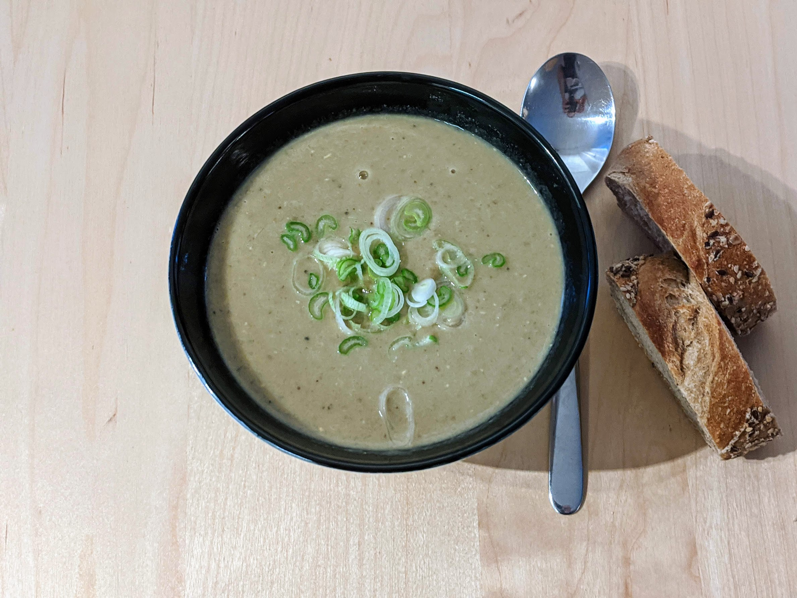

Soupe lentilles-aubergines

Pour 4 personnes :
- 600g d'aubergines
- 130g de lentilles rouges
- 20cl de lait de coco
- Un oignon
- Une grosse gousse d'ail
- Une bonne cuillère à café de curry
- Un demi-cube de bouillon de légumes
- Sel, poivre, huile d'olive
- Éplucher et couper l'oignon, l'ail et l'aubergine en petits bouts.
- Les faire revenir dans de l'huile d'olive au fond d'une casserole, à feu doux. Pendant ce temps, rincer les lentilles.
- Lorsque les légumes ont changé de tête (l'ail a jauni, les oignons sont devenus transparents, les aubergines ont bruni), ajouter le curry, les lentilles, le poivre, le bouillon, et un litre d'eau.
- Après vingt minutes à feu moyen, mixer la soupe, ajouter le lait de coco, et saler à la toute fin. Servir chaud, par exemple avec des oignons frais.
Retour à la liste des recettes